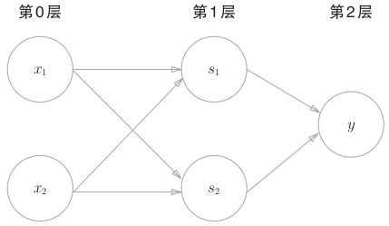

1. 感知机¶
1.2. 感知机的实现¶
使用感知机可以表示与门，或门等逻辑电路
- 与门
def AND(X1, X2):
x = np.array([x1, x2])
w = np.array([0.5, 0.5])
b = -0.7
tmp = np.sum(w*x) + b
if tmp <= 0:
return 0
else:
return 1
- 与非门
def NAND(x1, x2):
x = np.array([x1, x2])
w = np.array([-0.5, -0.5])
b = 0.7
tmp = np.sum(w*x) + b
if tmp <= 0:
return 0
else:
return 1
- 或门
def OR(x1, x2):
x = np.array([x1, x2])
w = np.array([-0.5, -0.5])
b = -0.2
tmp = np.sum(w*x) + b
if tmp <= 0:
return 0
else:
return 1
- 重点
- w1,w2 权重是控制输入信号的重要性b 偏置是调整神经元被激活的容易程度
1.3. 多层感知机¶
感知机的局限性
单层感知机只能表示线性空间（由直线分割的空间）。
多层感知机
研究表明激活函数使用了非线性的sigmoid函数的2层感知机可以表示任意函数。多层感知机理论上可以表示计算机。异或门
def XOR(x1, x2):
s1 = NAND(x1, x2)
s2 = OR(x1, x2)
y = AND(s1, s2)
return y